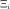
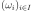

LHSExperiment¶
(Source code, png, hires.png, pdf)
{kind=link}
{kind=link}
-
class
LHSExperiment(*args)¶ LHS experiment.
- Available constructors:
LHSExperiment(size, alwaysShuffle, randomShift)
LHSExperiment(distribution, size, alwaysShuffle, randomShift)
Parameters: distribution :
DistributionDistribution
 with an independent copula used to generate the
set of input data.
with an independent copula used to generate the
set of input data.size : positive int
Number of points that will be generated in the experiment.
alwaysShuffle : bool
Flag to tell if the shuffle must be regenerated at each call to generate or not. Default is False: the shuffle is generated once and for all.
randomShift : bool
Flag to tell if the point selected in each cell of the shuffle is the center of the cell (randomshift is False) or if it is drawn wrt the restriction of the distribution to the cell. Default is True.
See also
Notes
LHSExperiment is a random weighted design of experiments. The method generates a sample of points  according to the distribution
with the LHS technique: some cells are determined,
with the same probabilistic content according to the distribution, each line
and each column contains exactly one cell, then points are selected among these
selected cells. The weights associated to the points are all equal to
. When recalled, the generate()method generates a new sample: the point selection within the cells changes but not the cells selection. To change the cell selection, it is necessary to create a new LHS Experiment.Examples
Create an LHSExperiment:
>>> import openturns as ot
Generate the sample reusing the initial shuffle and using a random shift:
>>> ot.RandomGenerator.SetSeed(0) >>> experiment = ot.LHSExperiment(ot.Normal(2), 5, False, True) >>> print(experiment.generate()) [ X0 X1 ] 0 : [ 0.887671 -0.647818 ] 1 : [ 0.107683 1.15851 ] 2 : [ 0.453077 -1.04742 ] 3 : [ -0.928012 0.409732 ] 4 : [ -0.290539 0.16153 ] >>> print(experiment.generate()) [ X0 X1 ] 0 : [ 1.52938 -0.343515 ] 1 : [ -0.0703427 2.36353 ] 2 : [ 0.576091 -1.79398 ] 3 : [ -2.11636 0.619315 ] 4 : [ -0.699601 -0.0570674 ]
Generate the sample using a new shuffle and a random shift:
>>> ot.RandomGenerator.SetSeed(0) >>> experiment = ot.LHSExperiment(ot.Normal(2), 5, True, True) >>> print(experiment.generate()) [ X0 X1 ] 0 : [ 0.887671 -0.647818 ] 1 : [ 0.107683 1.15851 ] 2 : [ 0.453077 -1.04742 ] 3 : [ -0.928012 0.409732 ] 4 : [ -0.290539 0.16153 ] >>> print(experiment.generate()) [ X0 X1 ] 0 : [ -1.72695 -0.591043 ] 1 : [ -0.240653 -0.0406593 ] 2 : [ 0.828719 2.12547 ] 3 : [ 2.37061 0.508903 ] 4 : [ -0.668296 -1.11573 ]
Generate the sample reusing the initial shuffle and using a constant shift:
>>> ot.RandomGenerator.SetSeed(0) >>> experiment = ot.LHSExperiment(ot.Normal(2), 5, False, False) >>> print(experiment.generate()) [ X0 X1 ] 0 : [ 1.28155 -0.524401 ] 1 : [ 0 1.28155 ] 2 : [ 0.524401 -1.28155 ] 3 : [ -1.28155 0.524401 ] 4 : [ -0.524401 0 ] >>> print(experiment.generate()) [ X0 X1 ] 0 : [ 1.28155 -0.524401 ] 1 : [ 0 1.28155 ] 2 : [ 0.524401 -1.28155 ] 3 : [ -1.28155 0.524401 ] 4 : [ -0.524401 0 ]
Generate the sample using a new shuffle and using a constant shift:
>>> ot.RandomGenerator.SetSeed(0) >>> experiment = ot.LHSExperiment(ot.Normal(2), 5, True, False) >>> print(experiment.generate()) [ X0 X1 ] 0 : [ 1.28155 -0.524401 ] 1 : [ 0 1.28155 ] 2 : [ 0.524401 -1.28155 ] 3 : [ -1.28155 0.524401 ] 4 : [ -0.524401 0 ] >>> print(experiment.generate()) [ X0 X1 ] 0 : [ 0.524401 -0.524401 ] 1 : [ 0 1.28155 ] 2 : [ -1.28155 0 ] 3 : [ -0.524401 0.524401 ] 4 : [ 1.28155 -1.28155 ]
Methods
ComputeShuffle(totalSize)Generate a new cell randomization for external use. generate()Generate points according to the type of the experiment. generateWithWeights()Generate points and their associated weight according to the type of the experiment. getAlwaysShuffle()Cell randomization flag accessor. getClassName()Accessor to the object’s name. getDistribution()Accessor to the distribution. getId()Accessor to the object’s id. getName()Accessor to the object’s name. getRandomShift()Randomization flag accessor. getShadowedId()Accessor to the object’s shadowed id. getShuffle()Return the cell randomization. getSize()Accessor to the size of the generated sample. getVisibility()Accessor to the object’s visibility state. hasName()Test if the object is named. hasUniformWeights()Ask whether the experiment has uniform weights. hasVisibleName()Test if the object has a distinguishable name. setAlwaysShuffle(alwaysShuffle)Cell randomization flag accessor. setDistribution(distribution)Accessor to the distribution. setName(name)Accessor to the object’s name. setRandomShift(randomShift)Randomization flag accessor. setShadowedId(id)Accessor to the object’s shadowed id. setSize(size)Accessor to the size of the generated sample. setVisibility(visible)Accessor to the object’s visibility state. -
__init__(*args)¶ x.__init__(…) initializes x; see help(type(x)) for signature
-
static
ComputeShuffle(totalSize)¶ Generate a new cell randomization for external use.
Parameters: dimension : positive int
Number of input dimension.
totalSize : positive int
Number of points that need to be shuffled.
Returns: shuffle :
MatrixFor each point, the indices of the shuffled components.
-
generate()¶ Generate points according to the type of the experiment.
Returns: sample :
SamplePoints
 which constitute the design of experiments
with
which constitute the design of experiments
with  . The sampling method is defined by the nature of
the weighted experiment.
. The sampling method is defined by the nature of
the weighted experiment.Examples
>>> import openturns as ot >>> ot.RandomGenerator.SetSeed(0) >>> myExperiment = ot.MonteCarloExperiment(ot.Normal(2), 5) >>> sample = myExperiment.generate() >>> print(sample) [ X0 X1 ] 0 : [ 0.608202 -1.26617 ] 1 : [ -0.438266 1.20548 ] 2 : [ -2.18139 0.350042 ] 3 : [ -0.355007 1.43725 ] 4 : [ 0.810668 0.793156 ]
-
generateWithWeights()¶ Generate points and their associated weight according to the type of the experiment.
Returns: sample :
SampleThe points which constitute the design of experiments. The sampling method is defined by the nature of the experiment.
weights :
Pointof size
Weights  associated with the points. By default, all the weights are equal to
 .
.Examples
>>> import openturns as ot >>> ot.RandomGenerator.SetSeed(0) >>> myExperiment = ot.MonteCarloExperiment(ot.Normal(2), 5) >>> sample, weights = myExperiment.generateWithWeights() >>> print(sample) [ X0 X1 ] 0 : [ 0.608202 -1.26617 ] 1 : [ -0.438266 1.20548 ] 2 : [ -2.18139 0.350042 ] 3 : [ -0.355007 1.43725 ] 4 : [ 0.810668 0.793156 ] >>> print(weights) [0.2,0.2,0.2,0.2,0.2]
-
getAlwaysShuffle()¶ Cell randomization flag accessor.
Returns: alwaysShuffle : bool
Flag to tell if the shuffle must be regenerated at each call to generate or not. Default is False: the shuffle is generated once and for all.
-
getClassName()¶ Accessor to the object’s name.
Returns: class_name : str
The object class name (object.__class__.__name__).
-
getDistribution()¶ Accessor to the distribution.
Returns: distribution :
DistributionDistribution used to generate the set of input data.
-
getId()¶ Accessor to the object’s id.
Returns: id : int
Internal unique identifier.
-
getName()¶ Accessor to the object’s name.
Returns: name : str
The name of the object.
-
getRandomShift()¶ Randomization flag accessor.
Returns: randomShift : bool
Flag to tell if the point selected in each cell of the shuffle is the center of the cell (randomshift is False) or if it is drawn wrt the restriction of the distribution to the cell. Default is True.
-
getShadowedId()¶ Accessor to the object’s shadowed id.
Returns: id : int
Internal unique identifier.
-
getShuffle()¶ Return the cell randomization.
Returns: shuffle :
MatrixFor each point, the indices of the shuffled components.
-
getSize()¶ Accessor to the size of the generated sample.
Returns: size : positive int
Number
of points constituting the design of experiments.
-
getVisibility()¶ Accessor to the object’s visibility state.
Returns: visible : bool
Visibility flag.
-
hasName()¶ Test if the object is named.
Returns: hasName : bool
True if the name is not empty.
-
hasUniformWeights()¶ Ask whether the experiment has uniform weights.
Returns: hasUniformWeights : bool
Whether the experiment has uniform weights.
-
hasVisibleName()¶ Test if the object has a distinguishable name.
Returns: hasVisibleName : bool
True if the name is not empty and not the default one.
-
setAlwaysShuffle(alwaysShuffle)¶ Cell randomization flag accessor.
Parameters: alwaysShuffle : bool
Flag to tell if the shuffle must be regenerated at each call to generate or not. Default is False: the shuffle is generated once and for all.
-
setDistribution(distribution)¶ Accessor to the distribution.
Parameters: distribution :
DistributionDistribution used to generate the set of input data.
-
setName(name)¶ Accessor to the object’s name.
Parameters: name : str
The name of the object.
-
setRandomShift(randomShift)¶ Randomization flag accessor.
Parameters: randomShift : bool
Flag to tell if the point selected in each cell of the shuffle is the center of the cell (randomshift is False) or if it is drawn wrt the restriction of the distribution to the cell. Default is True.
-
setShadowedId(id)¶ Accessor to the object’s shadowed id.
Parameters: id : int
Internal unique identifier.
-
setSize(size)¶ Accessor to the size of the generated sample.
Parameters: size : positive int
Number
of points constituting the design of experiments.
-
setVisibility(visible)¶ Accessor to the object’s visibility state.
Parameters: visible : bool
Visibility flag.